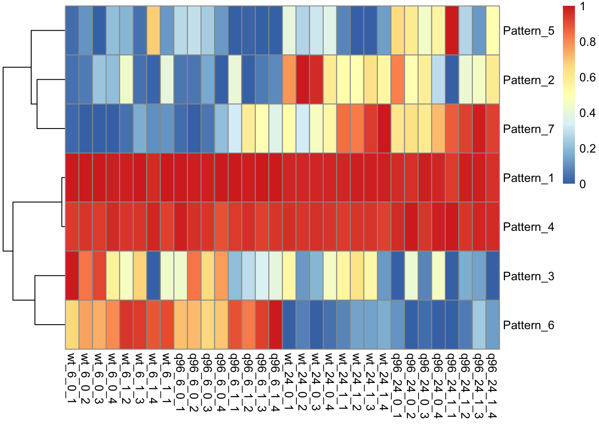
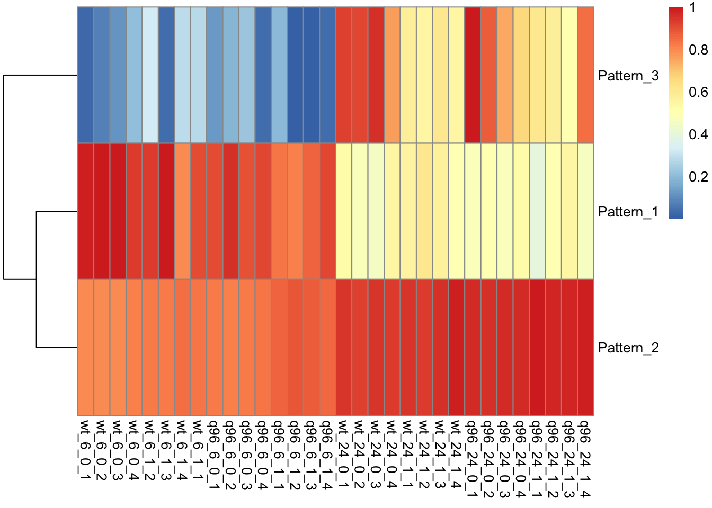
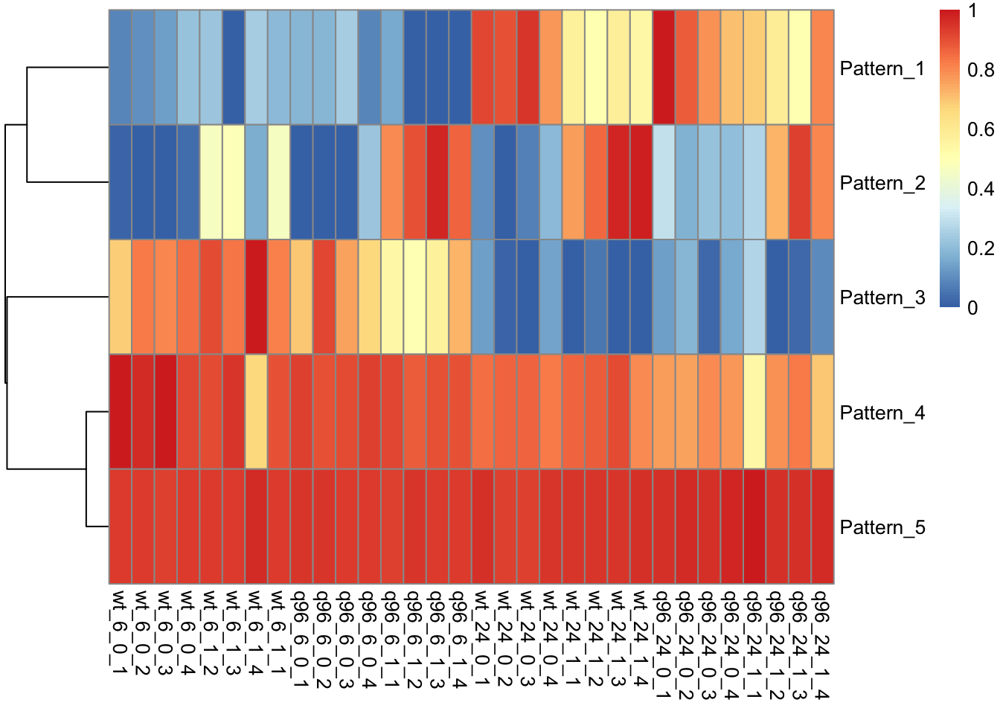
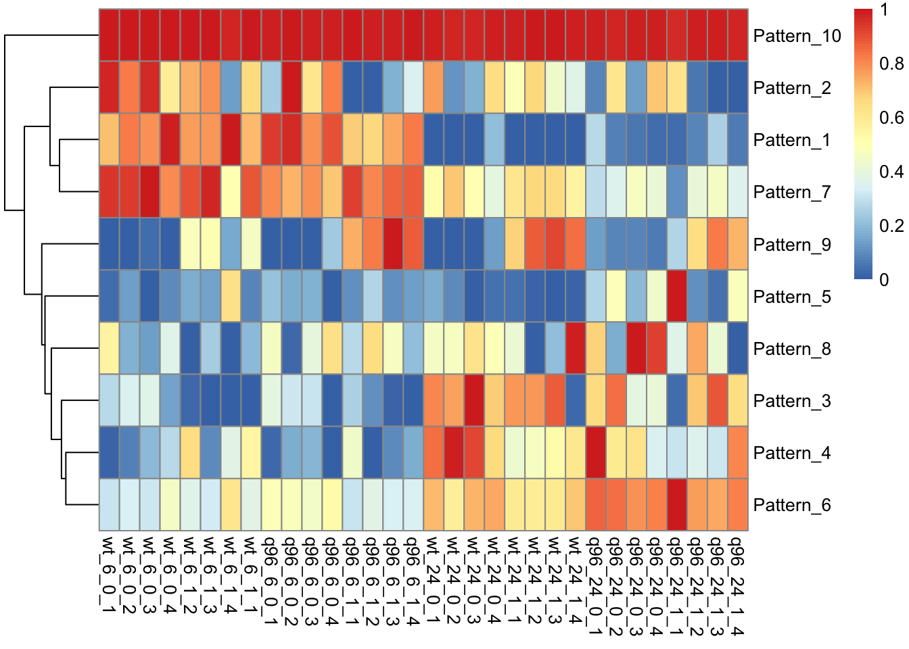
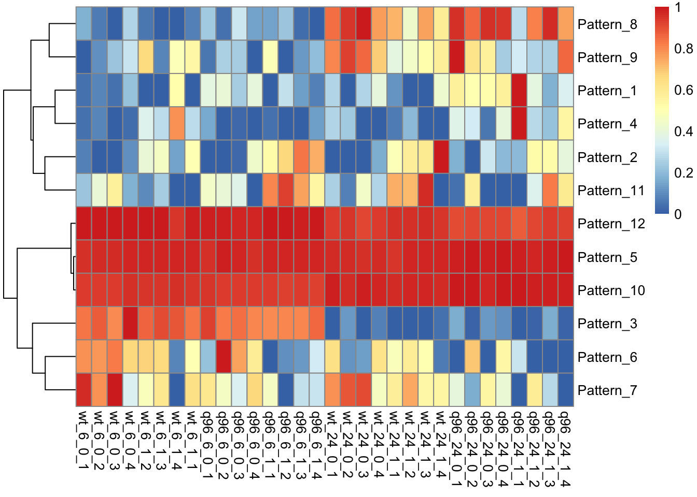
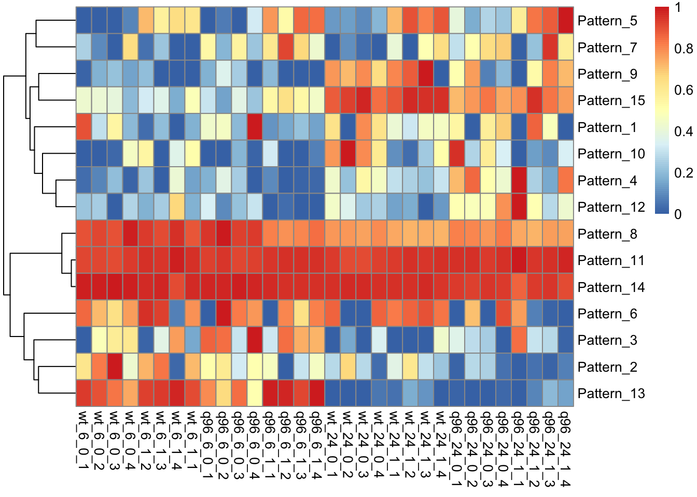
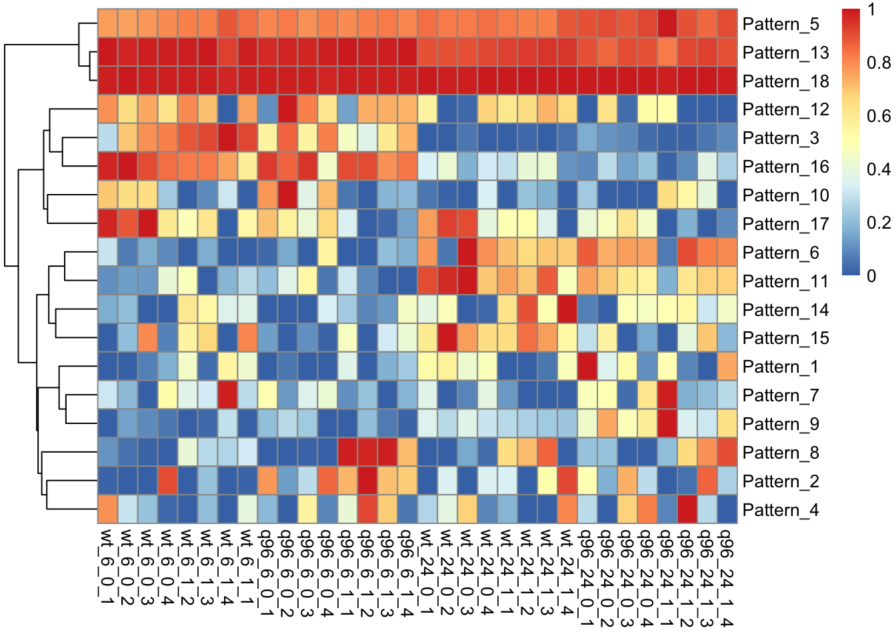
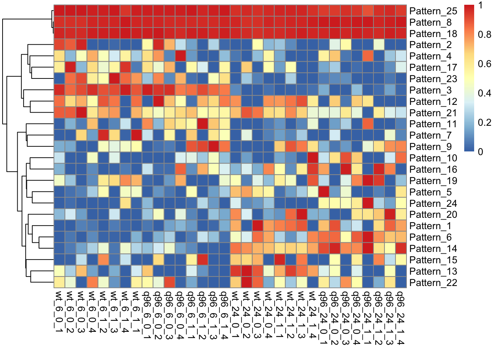

Last updated: 2020-05-29
Checks: 6 1
Knit directory: mousevsfish/
This reproducible R Markdown analysis was created with workflowr (version 1.6.2). The Checks tab describes the reproducibility checks that were applied when the results were created. The Past versions tab lists the development history.
The R Markdown is untracked by Git. To know which version of the R Markdown file created these results, you’ll want to first commit it to the Git repo. If you’re still working on the analysis, you can ignore this warning. When you’re finished, you can run wflow_publish to commit the R Markdown file and build the HTML.
Great job! The global environment was empty. Objects defined in the global environment can affect the analysis in your R Markdown file in unknown ways. For reproduciblity it’s best to always run the code in an empty environment.
The command set.seed(20200504) was run prior to running the code in the R Markdown file. Setting a seed ensures that any results that rely on randomness, e.g. subsampling or permutations, are reproducible.
Great job! Recording the operating system, R version, and package versions is critical for reproducibility.
Nice! There were no cached chunks for this analysis, so you can be confident that you successfully produced the results during this run.
Great job! Using relative paths to the files within your workflowr project makes it easier to run your code on other machines.
Great! You are using Git for version control. Tracking code development and connecting the code version to the results is critical for reproducibility.
The results in this page were generated with repository version 83bf3f0. See the Past versions tab to see a history of the changes made to the R Markdown and HTML files.
Note that you need to be careful to ensure that all relevant files for the analysis have been committed to Git prior to generating the results (you can use wflow_publish or wflow_git_commit). workflowr only checks the R Markdown file, but you know if there are other scripts or data files that it depends on. Below is the status of the Git repository when the results were generated:
Ignored files:
Ignored: .Rhistory
Ignored: .Rproj.user/
Ignored: data/.DS_Store
Ignored: data/datasets/.DS_Store
Ignored: data/datasets/mouse/.DS_Store
Ignored: data/datasets/mouse/kallisto/.DS_Store
Ignored: data/datasets/zebrafish/.DS_Store
Ignored: data/de/
Ignored: data/genesets/.DS_Store
Ignored: data/multiplier/.DS_Store
Untracked files:
Untracked: analysis/fADsamples.Rmd
Untracked: analysis/fba-test.Rmd
Untracked: analysis/probesetGenesets.Rmd
Untracked: analysis/projectr-test2.Rmd
Untracked: analysis/testing-pathwayPCA.Rmd
Untracked: code/combinedGSEA_ma.R
Untracked: data/datasets/fad/
Untracked: data/datasets/zebrafish/voomData.rds
Untracked: data/enrichment/
Untracked: data/factor_analysis/
Untracked: data/genesets/human/
Untracked: ~$notes.docx
Unstaged changes:
Deleted: data/datasets/zebrafish/gseaResults_h.rds
Deleted: data/datasets/zebrafish/gseaResults_h2.rds
Note that any generated files, e.g. HTML, png, CSS, etc., are not included in this status report because it is ok for generated content to have uncommitted changes.
There are no past versions. Publish this analysis with wflow_publish() to start tracking its development.
Due to the lack of results in our initial test of CoGAPS and ProjectR, the following modifications will be attempted:
Using the voom matrix weight-adjusted counts. We noticed that two of the samples had much higher expression than other ones, and possibly that normalisation hadn’t really corrected for that. The voom matrix has been adjusted with quality-weights, so that should help.
Filtering out genes with low variance as these are unlikely to contribute anyway.
dge_zeb <- readRDS(here("data", "datasets", "zebrafish", "dge.rds"))
dge_zebAn object of class "DGEList"
$counts
wt_6_0_1 wt_6_0_2 wt_6_0_3 wt_6_0_4 wt_6_1_2 wt_6_1_3
ENSDARG00000000001 196.907 336.3001 262.9228 220.8249 249.864 463.4722
ENSDARG00000000002 131.093 217.6999 170.0772 167.1751 141.136 273.5278
ENSDARG00000000018 592.000 1065.0000 752.0000 829.0000 795.000 1241.0000
ENSDARG00000000019 3204.000 5108.0000 3561.0000 3872.0000 3405.000 5793.0000
ENSDARG00000000068 217.000 441.0000 302.0000 285.0000 326.000 535.0000
wt_6_1_4 wt_6_1_1 q96_6_0_1 q96_6_0_2 q96_6_0_3 q96_6_0_4
ENSDARG00000000001 214.2697 214.6166 159.6455 175.8766 256.9751 140.6898
ENSDARG00000000002 303.7303 149.3834 194.3545 137.1234 165.0249 133.3102
ENSDARG00000000018 913.0000 828.0000 621.0000 586.0000 800.0000 569.0000
ENSDARG00000000019 4741.0000 3694.0000 3164.0000 3247.0000 4069.0000 3281.0000
ENSDARG00000000068 342.0000 297.0000 243.0000 233.0000 288.0000 180.0000
q96_6_1_1 q96_6_1_2 q96_6_1_3 q96_6_1_4 wt_24_0_1 wt_24_0_2
ENSDARG00000000001 390.0253 241.329 258.7419 249.4515 314.1703 330.8257
ENSDARG00000000002 292.9747 268.671 250.2581 231.5485 410.8297 330.1743
ENSDARG00000000018 1475.0000 864.000 925.0000 966.0000 790.0000 948.0000
ENSDARG00000000019 5717.0000 4464.000 4666.0000 4517.0000 4693.0000 4229.0000
ENSDARG00000000068 503.0000 330.000 367.0000 374.0000 398.0000 457.0000
wt_24_0_3 wt_24_0_4 wt_24_1_1 wt_24_1_2 wt_24_1_3 wt_24_1_4
ENSDARG00000000001 286.3625 273.4969 287.6616 319.7387 255.3742 222.8791
ENSDARG00000000002 389.6375 353.5031 222.3384 319.2613 245.6258 312.1209
ENSDARG00000000018 838.0000 829.0000 761.0000 876.0000 767.0000 823.0000
ENSDARG00000000019 4344.0000 4888.0000 3830.0000 3830.0000 3809.0000 4375.0000
ENSDARG00000000068 444.0000 444.0000 369.0000 364.0000 429.0000 295.0000
q96_24_0_1 q96_24_0_2 q96_24_0_3 q96_24_0_4 q96_24_1_1
ENSDARG00000000001 276.1545 218.8831 235.3858 188.8943 144.7541
ENSDARG00000000002 319.8455 330.1169 424.6142 327.1057 402.2459
ENSDARG00000000018 886.0000 717.0000 775.0000 728.0000 667.0000
ENSDARG00000000019 4864.0000 3647.0000 4772.0000 4603.0000 3720.0000
ENSDARG00000000068 397.0000 389.0000 360.0000 351.0000 367.0000
q96_24_1_2 q96_24_1_3 q96_24_1_4
ENSDARG00000000001 259.8351 199.8374 189.1448
ENSDARG00000000002 293.1649 356.1626 343.8552
ENSDARG00000000018 863.0000 777.0000 709.0000
ENSDARG00000000019 4032.0000 4082.0000 3378.0000
ENSDARG00000000068 396.0000 281.0000 287.0000
25025 more rows ...
$samples
group lib.size norm.factors
wt_6_0_1 1 17342614 0.995341
wt_6_0_2 1 30040365 1.013081
wt_6_0_3 1 19329223 1.018137
wt_6_0_4 1 20498892 1.008803
wt_6_1_2 1 19930475 1.026132
path
wt_6_0_1 /Volumes/biohub/20170906_Morgan_Hypoxia/3_quantifiedData/transcriptLevel/1_MORGAN_6P_PN1_S2_R1_001
wt_6_0_2 /Volumes/biohub/20170906_Morgan_Hypoxia/3_quantifiedData/transcriptLevel/2_MORGAN_6P_PN2_S5_R1_001
wt_6_0_3 /Volumes/biohub/20170906_Morgan_Hypoxia/3_quantifiedData/transcriptLevel/3_MORGAN_6P_PN3_S10_R1_001
wt_6_0_4 /Volumes/biohub/20170906_Morgan_Hypoxia/3_quantifiedData/transcriptLevel/4_MORGAN_6P_PN4_S8_R1_001
wt_6_1_2 /Volumes/biohub/20170906_Morgan_Hypoxia/3_quantifiedData/transcriptLevel/10_MORGAN_6P_PH2_S9_R1_001
basename id Age Genotype Hypoxia Gender Group
wt_6_0_1 1_MORGAN_6P_PN1_S2_R1_001 6P_PN1 6 wt 0 male wt_6_0
wt_6_0_2 2_MORGAN_6P_PN2_S5_R1_001 6P_PN2 6 wt 0 female wt_6_0
wt_6_0_3 3_MORGAN_6P_PN3_S10_R1_001 6P_PN3 6 wt 0 female wt_6_0
wt_6_0_4 4_MORGAN_6P_PN4_S8_R1_001 6P_PN4 6 wt 0 female wt_6_0
wt_6_1_2 10_MORGAN_6P_PH2_S9_R1_001 6P_PH2 6 wt 1 female wt_6_1
sample
wt_6_0_1 wt_6_0_1
wt_6_0_2 wt_6_0_2
wt_6_0_3 wt_6_0_3
wt_6_0_4 wt_6_0_4
wt_6_1_2 wt_6_1_2
27 more rows ...
$genes
ensembl_gene_id gene_name gene_biotype entrezid
ENSDARG00000000001 ENSDARG00000000001 slc35a5 protein_coding 368418
ENSDARG00000000002 ENSDARG00000000002 ccdc80 protein_coding 368419
ENSDARG00000000018 ENSDARG00000000018 nrf1 protein_coding 64604
ENSDARG00000000019 ENSDARG00000000019 ube2h protein_coding 368425
ENSDARG00000000068 ENSDARG00000000068 slc9a3r1a protein_coding 327272
description
ENSDARG00000000001 solute carrier family 35, member A5 [Source:ZFIN;Acc:ZDB-GENE-030616-55]
ENSDARG00000000002 coiled-coil domain containing 80 [Source:ZFIN;Acc:ZDB-GENE-030616-56]
ENSDARG00000000018 nuclear respiratory factor 1 [Source:ZFIN;Acc:ZDB-GENE-001221-1]
ENSDARG00000000019 ubiquitin-conjugating enzyme E2H (UBC8 homolog, yeast) [Source:ZFIN;Acc:ZDB-GENE-030616-67]
ENSDARG00000000068 solute carrier family 9, subfamily A (NHE3, cation proton antiporter 3), member 3 regulator 1a [Source:ZFIN;Acc:ZDB-GENE-031006-7]
25025 more rows ...counts_nn <- dge_zeb %>% cpm(log=TRUE)
# Are there values which are < 0?
sum(counts_nn < 0)[1] 201742# majority of values are > 0
sum(counts_nn > 0)[1] 599218# Filter out the rows containing negative values as these are likely
# to be low expressed anyway, and the matrix factorisation used in
# Cogaps will not accept them.
keepTheseGenes <- !rowSums(counts_nn < 0)
dge_zeb_f <- dge_zeb[keepTheseGenes,,keep.lib.sizes = FALSE] # 16,847 genes leftgeneVars <- rowVars(cpm(dge_zeb_f, log=TRUE))
summary(geneVars) Min. 1st Qu. Median Mean 3rd Qu. Max.
0.002101 0.019182 0.038003 0.076962 0.077863 5.948031 # Filter out genes with variance below median variance
keepTheseGenes2 <- rowVars(cpm(dge_zeb_f, log=TRUE)) > summary(geneVars)[[3]]
dge_zeb_f <- dge_zeb_f[keepTheseGenes2,,keep.lib.sizes = FALSE] voomData <- readRDS(here("data", "datasets", "zebrafish", "voomData.rds"))
voomExpression <- voomData$E%>%
as.data.frame() %>%
rownames_to_column("ensembl_gene_id") %>%
dplyr::filter(ensembl_gene_id %in% rownames(dge_zeb_f$counts)) %>%
column_to_rownames("ensembl_gene_id")
# get rid of negative values
keepTheseGenes <- !rowSums(voomExpression < 0)
voomExpression <- voomExpression[!rowSums(voomExpression < 0),]cogaps_def <- CoGAPS(as.matrix(voomExpression), nIterations = 1000)
This is CoGAPS version 3.6.0
Running Standard CoGAPS on as.matrix(voomExpression) (8306 genes and 32 samples) with parameters:
-- Standard Parameters --
nPatterns 7
nIterations 1000
seed 255
sparseOptimization FALSE
-- Sparsity Parameters --
alpha 0.01
maxGibbsMass 100 cogaps_def@sampleFactors %>% t %>% pheatmap(cluster_cols = FALSE)
Results here are already better and appear more interpretable than our initial test.
Pattern 2 shows the outlier samples
Pattern 7 captures aging (difference between 6 and 24 months)
Pattern 1 captures difference between normoxia and hypoxia. It seems that the 6 month mutants respond to hypoxia in a different way to the 6 month WTs.
Pattern 4, 3, 5 aren’t as easily interpretable, and there is some noise.
params <- new("CogapsParams")
params # defaultparameters-- Standard Parameters --
nPatterns 7
nIterations 50000
seed 345
sparseOptimization FALSE
-- Sparsity Parameters --
alpha 0.01
maxGibbsMass 100 # Quick sweep to see how many patterns / LVs is ideal
# Each run takes 2-3 mins to run so below takes <20 mins
npatterns <- c(3,5,7,10,12,15,18,25)
cogaps_nPatterns <- list()
for (i in npatterns){
params <- setParam(params, "nPatterns", i) #change the number of patterns/LVs
cogaps_nPatterns[i] <- CoGAPS(as.matrix(voomExpression),
params, nIterations = 1000)
}
This is CoGAPS version 3.6.0
Running Standard CoGAPS on as.matrix(voomExpression) (8306 genes and 32 samples) with parameters:
-- Standard Parameters --
nPatterns 3
nIterations 1000
seed 345
sparseOptimization FALSE
-- Sparsity Parameters --
alpha 0.01
maxGibbsMass 100 Warning in `[<-`(`*tmp*`, i, value = CoGAPS(as.matrix(voomExpression), params, :
implicit list embedding of S4 objects is deprecated
This is CoGAPS version 3.6.0
Running Standard CoGAPS on as.matrix(voomExpression) (8306 genes and 32 samples) with parameters:
-- Standard Parameters --
nPatterns 5
nIterations 1000
seed 345
sparseOptimization FALSE
-- Sparsity Parameters --
alpha 0.01
maxGibbsMass 100 Warning in `[<-`(`*tmp*`, i, value = CoGAPS(as.matrix(voomExpression), params, :
implicit list embedding of S4 objects is deprecated
This is CoGAPS version 3.6.0
Running Standard CoGAPS on as.matrix(voomExpression) (8306 genes and 32 samples) with parameters:
-- Standard Parameters --
nPatterns 7
nIterations 1000
seed 345
sparseOptimization FALSE
-- Sparsity Parameters --
alpha 0.01
maxGibbsMass 100 Warning in `[<-`(`*tmp*`, i, value = CoGAPS(as.matrix(voomExpression), params, :
implicit list embedding of S4 objects is deprecated
This is CoGAPS version 3.6.0
Running Standard CoGAPS on as.matrix(voomExpression) (8306 genes and 32 samples) with parameters:
-- Standard Parameters --
nPatterns 10
nIterations 1000
seed 345
sparseOptimization FALSE
-- Sparsity Parameters --
alpha 0.01
maxGibbsMass 100 Warning in `[<-`(`*tmp*`, i, value = CoGAPS(as.matrix(voomExpression), params, :
implicit list embedding of S4 objects is deprecated
This is CoGAPS version 3.6.0
Running Standard CoGAPS on as.matrix(voomExpression) (8306 genes and 32 samples) with parameters:
-- Standard Parameters --
nPatterns 12
nIterations 1000
seed 345
sparseOptimization FALSE
-- Sparsity Parameters --
alpha 0.01
maxGibbsMass 100 Warning in `[<-`(`*tmp*`, i, value = CoGAPS(as.matrix(voomExpression), params, :
implicit list embedding of S4 objects is deprecated
This is CoGAPS version 3.6.0
Running Standard CoGAPS on as.matrix(voomExpression) (8306 genes and 32 samples) with parameters:
-- Standard Parameters --
nPatterns 15
nIterations 1000
seed 345
sparseOptimization FALSE
-- Sparsity Parameters --
alpha 0.01
maxGibbsMass 100 Warning in `[<-`(`*tmp*`, i, value = CoGAPS(as.matrix(voomExpression), params, :
implicit list embedding of S4 objects is deprecated
This is CoGAPS version 3.6.0
Running Standard CoGAPS on as.matrix(voomExpression) (8306 genes and 32 samples) with parameters:
-- Standard Parameters --
nPatterns 18
nIterations 1000
seed 345
sparseOptimization FALSE
-- Sparsity Parameters --
alpha 0.01
maxGibbsMass 100 Warning in `[<-`(`*tmp*`, i, value = CoGAPS(as.matrix(voomExpression), params, :
implicit list embedding of S4 objects is deprecated
This is CoGAPS version 3.6.0
Running Standard CoGAPS on as.matrix(voomExpression) (8306 genes and 32 samples) with parameters:
-- Standard Parameters --
nPatterns 25
nIterations 1000
seed 345
sparseOptimization FALSE
-- Sparsity Parameters --
alpha 0.01
maxGibbsMass 100 Warning in `[<-`(`*tmp*`, i, value = CoGAPS(as.matrix(voomExpression), params, :
implicit list embedding of S4 objects is deprecatednPatterns = 3cogaps_nPatterns[[3]]@sampleFactors %>% t %>% pheatmap(cluster_cols = FALSE)
nPatterns = 5cogaps_nPatterns[[5]]@sampleFactors %>% t %>% pheatmap(cluster_cols = FALSE)
nPatterns = 10cogaps_nPatterns[[10]]@sampleFactors %>% t %>% pheatmap(cluster_cols = FALSE)
nPatterns = 12cogaps_nPatterns[[12]]@sampleFactors %>% t %>% pheatmap(cluster_cols = FALSE)
nPatterns = 15cogaps_nPatterns[[15]]@sampleFactors %>% t %>% pheatmap(cluster_cols = FALSE)
nPatterns = 18cogaps_nPatterns[[18]]@sampleFactors %>% t %>% pheatmap(cluster_cols = FALSE)
nPatterns = 25cogaps_nPatterns[[25]]@sampleFactors %>% t %>% pheatmap(cluster_cols = FALSE)
sessionInfo()R version 3.6.3 (2020-02-29)
Platform: x86_64-apple-darwin15.6.0 (64-bit)
Running under: macOS Mojave 10.14.6
Matrix products: default
BLAS: /Library/Frameworks/R.framework/Versions/3.6/Resources/lib/libRblas.0.dylib
LAPACK: /Library/Frameworks/R.framework/Versions/3.6/Resources/lib/libRlapack.dylib
locale:
[1] en_AU.UTF-8/en_AU.UTF-8/en_AU.UTF-8/C/en_AU.UTF-8/en_AU.UTF-8
attached base packages:
[1] parallel stats graphics grDevices utils datasets methods
[8] base
other attached packages:
[1] magrittr_1.5 sva_3.34.0 BiocParallel_1.20.1
[4] mgcv_1.8-31 nlme_3.1-147 pheatmap_1.0.12
[7] edgeR_3.28.1 limma_3.42.2 genefilter_1.68.0
[10] dplyr_0.8.5 ggplot2_3.3.0 tibble_3.0.1
[13] here_0.1 projectR_1.2.0 Biobase_2.46.0
[16] BiocGenerics_0.32.0 CoGAPS_3.6.0
loaded via a namespace (and not attached):
[1] bitops_1.0-6 matrixStats_0.56.0
[3] fs_1.4.1 bit64_0.9-7
[5] doParallel_1.0.15 RColorBrewer_1.1-2
[7] rprojroot_1.3-2 GenomeInfoDb_1.22.1
[9] tools_3.6.3 backports_1.1.7
[11] R6_2.4.1 KernSmooth_2.23-17
[13] DBI_1.1.0 colorspace_1.4-1
[15] withr_2.2.0 tidyselect_1.1.0
[17] bit_1.1-15.2 compiler_3.6.3
[19] git2r_0.27.1 DelayedArray_0.12.3
[21] pkgmaker_0.31.1 caTools_1.18.0
[23] scales_1.1.1 NMF_0.22.0
[25] stringr_1.4.0 digest_0.6.25
[27] rmarkdown_2.1 XVector_0.26.0
[29] pkgconfig_2.0.3 htmltools_0.4.0
[31] bibtex_0.4.2.2 rlang_0.4.6
[33] RSQLite_2.2.0 gtools_3.8.2
[35] RCurl_1.98-1.2 GenomeInfoDbData_1.2.2
[37] Matrix_1.2-18 Rcpp_1.0.4
[39] munsell_0.5.0 S4Vectors_0.24.4
[41] Rhdf5lib_1.8.0 lifecycle_0.2.0
[43] stringi_1.4.6 yaml_2.2.1
[45] SummarizedExperiment_1.16.1 zlibbioc_1.32.0
[47] rhdf5_2.30.1 gplots_3.0.3
[49] plyr_1.8.6 blob_1.2.1
[51] grid_3.6.3 gdata_2.18.0
[53] promises_1.1.0 crayon_1.3.4
[55] lattice_0.20-41 splines_3.6.3
[57] annotate_1.64.0 locfit_1.5-9.4
[59] knitr_1.28 pillar_1.4.4
[61] GenomicRanges_1.38.0 rngtools_1.5
[63] reshape2_1.4.4 codetools_0.2-16
[65] stats4_3.6.3 XML_3.99-0.3
[67] glue_1.4.1 evaluate_0.14
[69] vctrs_0.3.0 httpuv_1.5.2
[71] foreach_1.5.0 gtable_0.3.0
[73] purrr_0.3.4 assertthat_0.2.1
[75] xfun_0.13 gridBase_0.4-7
[77] xtable_1.8-4 later_1.0.0
[79] survival_3.1-12 SingleCellExperiment_1.8.0
[81] iterators_1.0.12 memoise_1.1.0
[83] AnnotationDbi_1.48.0 registry_0.5-1
[85] IRanges_2.20.2 workflowr_1.6.2
[87] cluster_2.1.0 ellipsis_0.3.1
[89] ROCR_1.0-11